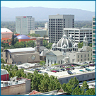
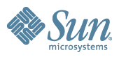
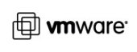

|
CGO-2007
March 11-14, 2007
San Jose, California
(co-located with PPoPP'07)
|

|
Welcome to the
website for the 2007 International Symposium on Code Generation and
Optimization. CGO was held March 11-14, 2007 in San Jose, California.
The conference is now over. Here are the best paper/presentation
winners:
- Best paper: On the Complexity of Register
Coalescing, Florent Bouchez, Alain Darte, and Fabrice Rastello
(LIP UMR CNRS-ENS Lyon-UCB Lyon-Inria)
- Best student presentation: Vijay Janapa Reddi for
Persistent Code Caching: Exploiting Code Reuse across Executions
and Applications, Vijay Janapa Reddi (Harvard University), Dan
Connors (University of Colorado at Boulder), Robert Cohn (Intel), and
Michael D. Smith (Harvard University)
The International Symposium on Code Generation and Optimization (CGO)
provides a premier venue to bring together researchers and
practitioners working on feedback-directed optimization and back-end
compilation techniques. The conference covers optimization for
parallelism, performance, power, and security, where that optimization
occurs in the mapping from an input (including APIs, high-level
languages, byte codes such as .NET or Java, or ISAs) to a similar or
lower-level target machine representation. Papers are solicited in
areas that support such mapping and optimization:
- Compilers, back-end code generators, translators, and binary
optimization tools and techniques that may be static, dynamic,
adaptive, or continuous
- Profiling and feedback-directed methodologies
- Innovative analysis, transformation, and optimization techniques
- Intermediate representations which enable more powerful or
efficient optimization
- Vertical integration of language features, representations,
optimizations, and runtime support for parallelism (including support
for transactional semantics, efficient message passing, and dynamic
thread creation)
- Thread extraction and thread-level speculation, especially for
multi-core systems
- Phase detection and analysis techniques
- Mechanisms and optimization techniques supporting the efficient
implementation of security protection models, reliability and energy
efficiency
- Traditional compiler optimizations
- Hardware mechanisms and systems that implement or assist in any of
the above areas
- Experiences with real dynamic optimization and compilation
systems, particularly with large, complex applications
- Explorations of trade-offs concerning when (static/dynamic) and
where (software/hardware) to optimize
- Particularly novel ideas of interest to this community
| CGO Corporate Supporters |
|
|
 |
 |
 |
|
|
|

|
 |
 IEEE CS TC-uARCH
IEEE CS TC-uARCH ACM SIGMICRO
ACM SIGMICRO